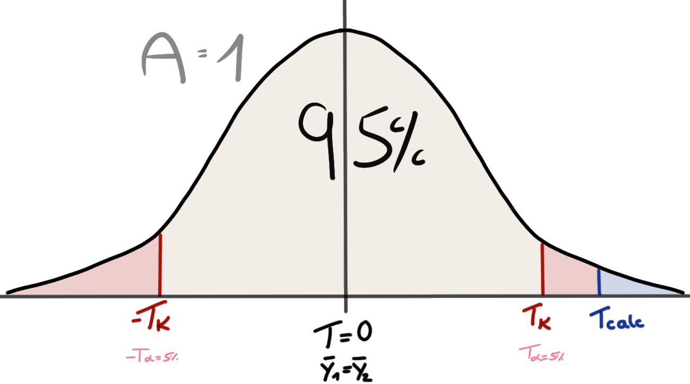
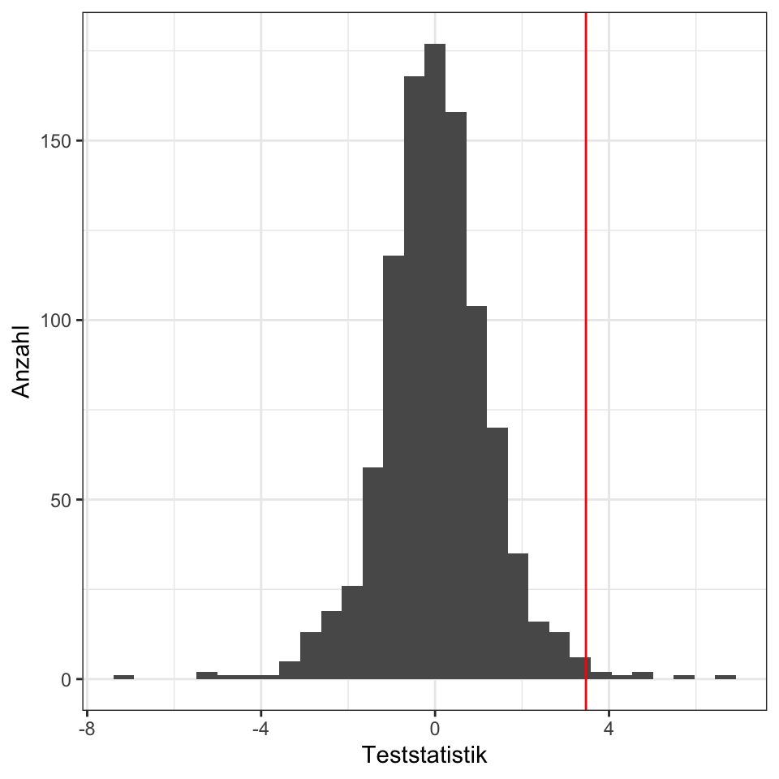
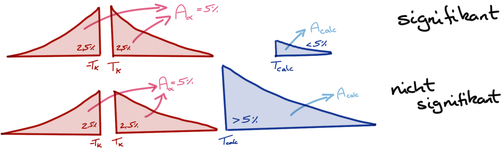
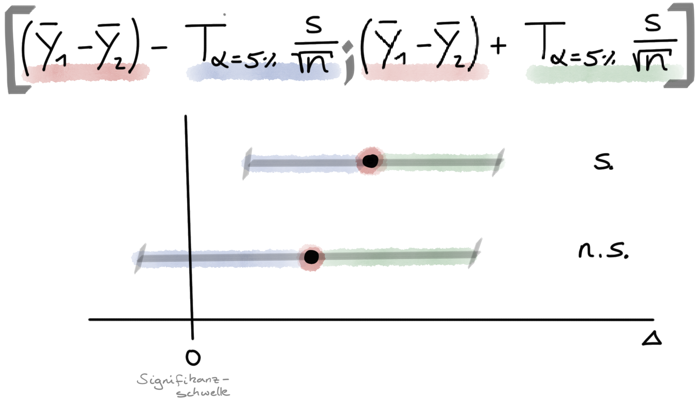
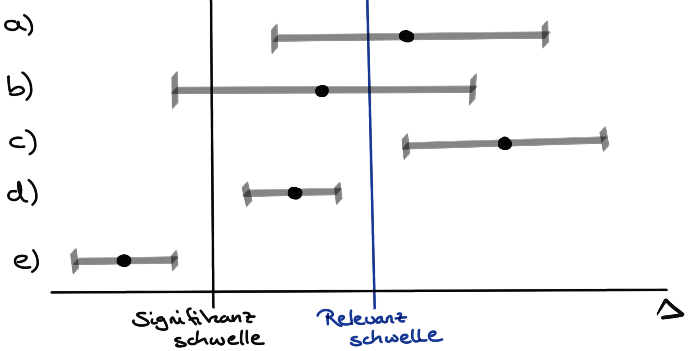

| animal | jump_length |
|---|---|
| cat | 8.5 |
| cat | 9.9 |
| cat | 8.9 |
| cat | 9.4 |
| dog | 8.0 |
| dog | 7.2 |
| dog | 8.4 |
| dog | 7.5 |
19 Die Testentscheidung
Letzte Änderung am 28. September 2023 um 14:04:26
“Wir können das Universum nicht erklären, sondern nur beschreiben; und wir wissen nicht, ob unsere Theorien wahr sind, wir wissen nur, dass sie nicht falsch sind.” — Harald Lesch
Forschung basiert auf dem Falsifikationsprinzip. Wir können Modelle oder Hypothesen nur ablehnen und behalten das weniger schlechte Modell oder die weniger schlechte Hypothese bei. In diesem Kapitel wollen wir uns mit dem statistischen Testen beschäftigen. Wir wollen also Testen, ob wir eine Hypothese ablehnen können. Das statistische Testen ist dabei eine eigne Philosophie oder Gedankengebäude. Wir führen spezielle, gedankliche Schritte durch um zu einer Entscheidung zu kommen. Diese Entscheidung basiert auf Regeln, die wir dann in der Summe als statistisches Testen bezeichnen. Wir schauen uns hier den am meisten verbreiteten Zweig des statistischen Testen an – wir nutzen hier die fequentistische Statistik. Für die Anwendung ist es egal, aber vielleicht hörst du später mal was von anderen Möglichkeiten um zu einer statistischen Entscheidung zu kommen. Deshalb hier einmal erwähnt, nach welche Philosophie wir testen. Wenn dich mehr über das statistische Testen interessiert, kann ich dir die Veröffentlichung von Gigerenzer u. a. (2004) sehr ans Herz legen.
Du erfährst im diesem Kapitel mehr zur statistischen Testentscheidung und welche Konzepte wir beim statistischen Testen nutzen:
- Wir verstehen die statistischen Testentscheidung anhand des Konzeptes der Teststatistik \(T\) (siehe Kapitel 19.2.1) und können eine simple Teststatistik berechnen.
- Wir können die statistischen Testentscheidung anwenden, da wir das Konzept des \(p\)-Wertes \(Pr(T|H_0)\) verstanden haben (siehe Kapitel 19.2.2). Wir treffen eine Testentscheidung anhand des \(p\)-Wertes.
- Wir können die statistischen Testentscheidung anwenden, da wir das Konzept der 95% Konfidenzintervalle verstanden haben (siehe Kapitel 19.2.3). Wir haben verstanden, dass es einen konzeptionellen Unterschied zwischen dem Begriff Signifikanz und Relevanz gibt.
Die folgenden Konzepte sind so zentral, dass wir immer wieder auf diese zurückkommen werden. Daher ist es wichtig, dass du ein Grundverständnis von den statistischen Testen für dich erwirbst. Eine wissenschaftliche Abschlussarbeit wirst du ohne einen statistischen Test selten abgeben können.
Ein Wort zur Klausur
Abhängig von der Lernstufe - daher welche Veranstaltung du gerade bei mir besuchst - kommt nicht alles aus diesem Kapitel in der Klausur dran. Bitte gleiche die Inhalte, die ich in der aktuellen Vorlesung unterrichte, mit dem Material hier ab. Als Faustregel gilt, je höher die Lernstufe desto mehr musst du von dem statistischen Testen Wissen und Verstehen. Beachte auch die Probeklausur in deiner Veranstaltung und die gesammelten Klausurfragen auf GitHub.
19.1 Die Hypothesen
Wir können auf allen Daten einen statistischen Test rechnen und erhalten statistische Maßzahlen wie eine Teststatistik oder einen \(p\)-Wert. Nur leider können wir mit diesen statistischen Maßzahlen nicht viel anfangen ohne die Hypothesen zu kennen. Jeder statistische Test testet eine Nullhypothese. Ob diese Hypothese dem Anwender nun bekannt ist oder nicht, ein statistischer Test testet eine Nullhypothese. Daher müssen wir uns immer klar sein, was die entsprechende Nullhypothese zu unserer Fragestellung ist. Wenn du hier stockst, ist das ganz normal. Eine Fragestellung mit einer statistischen Hypothese zu verbinden ist nicht immer so einfach gemacht.
Die Nullhypothese \(H_0\) und die Alternativhypothese \(H_A\)
Die Nullhypothese \(H_0\) nennen wir auch die Null oder Gleichheitshypothese. Die Nullhypothese sagt aus, dass zwei Gruppen gleich sind oder aber kein Effekt zu beobachten ist.
\[ H_0: \bar{y}_{1} = \bar{y}_{2} \]
Die Alternativhypothese \(H_A\) oder \(H_1\) auch Alternative genannt nennen wir auch Unterschiedshypothese. Die Alternativhypothese besagt, dass ein Unterschied vorliegt oder aber ein Effekt vorhanden ist.
\[ H_A: \bar{y}_{1} \neq \bar{y}_{2} \]
Als Veranschaulichung nehmen wir das Beispiel aus der unterschiedlichen Sprungweiten in [cm] für Hunde- und Katzenflöhe. Wir formulieren als erstes die Fragestellung. Eine Fragestellung endet mit einem Fragezeichen.
Liegt ein Unterschied zwischen den Sprungweiten von Hunde- und Katzenflöhen vor?
Wir können die Frage auch anders formulieren.
Springen Hunde- und Katzenflöhe unterschiedlich weit?
Wichtig ist, dass wir eine Fragestellung formulieren. Wir können auch mehrere Fragen an einen Datensatz haben. Das ist auch vollkommen normal. Nur hat jede Fragestellung ein eigenes Hypothesenpaar. Wir bleiben aber bei dem simplen Beispiel mit den Sprungweiten von Hunde- und Katzenflöhen.
Eine statistische Hypothese ist eine Aussage über einen Parameter einer Population.
Wie sieht nun die statistische Hypothese in diesem Beispiel aus? Wir wollen uns die Sprungweite in [cm] anschauen und entscheiden, ob die Sprungweite für Hunde- und Katzenflöhen sich unterscheidet. Eine statistische Hypothese ist eine Aussage über einen Parameter einer Population. Wir entscheiden jetzt, dass wir die mittlere Sprungweite der Hundeflöhe \(\bar{y}_{dog}\) mit der mittleren Sprungweite der Katzenflöhe \(\bar{y}_{cat}\) vergleichen wollen. Es ergibt sich daher folgendes Hypothesenpaar.
\[ \begin{aligned} H_0: \bar{y}_{dog} &= \bar{y}_{cat} \\ H_A: \bar{y}_{dog} &\neq \bar{y}_{cat} \\ \end{aligned} \]
Das Falisifkationsprinzip - wir können nur Ablehnen - kommt hier zusammen mit der frequentistischen Statistik in der wir nur eine Wahrscheinlichkeitsaussage über das Auftreten der Daten \(D\) - unter der Annahme \(H_0\) gilt - treffen können.
Es ist wichtig sich in Erinnerung zu rufen, dass wir nur und ausschließlich Aussagen über die Nullhypothese treffen werden. Das frequentistische Hypothesentesten kann nichts anders. Wir kriegen keine Aussage über die Alternativhypothese sondern nur eine Abschätzung der Wahrscheinlichkeit des Auftretens der Daten im durchgeführten Experiment, wenn die Nullhypothese wahr wäre. Wenn die Nullhypothese war ist, dann liegt kein Effekt oder Unterschied vor.
19.2 Die Testentscheidung…
In den folgenden Kapiteln werden wir verschiedene statistische Tests kennenlernen. Alle statistischen Tests haben gemein, dass ein Test eine Teststatistik \(T_{calc}\) berechnet. Darüber hinaus liefert jeder Test auch einen p-Wert (eng. p-value). Manche statistischen Test geben auch ein 95% Konfidenzintervall wieder. Eine Testentscheidung gegen die Nullhypothese \(H_0\) kann mit jedem der drei statistischen Maßzahlen - Teststatistik, \(p\)-Wert und Konfidenzintervall - durchgeführt werden. Die Regel für die Entscheidung, ob die Nullhypothese \(H_0\) abgelehnt werden kann, ist nur jeweils anders. In Tabelle 19.1 sind die Entscheidungsregeln einmal zusammengefasst.
| Teststatistik | p-Wert | 95% Konfidenzintervall | |
|---|---|---|---|
| \(\boldsymbol{T_{calc}}\) | \(\boldsymbol{Pr(\geq T_{calc}|H_0)}\) | \(\boldsymbol{KI_{1-\alpha}}\) | |
| H\(_0\) ablehnen | \(T_{calc} \geq T_{\alpha = 5\%}\) | \(Pr(\geq T_{calc}| H_0) \leq \alpha\) | \(\Delta_{A-B}\): enthält nicht 0 |
| H\(_0\) ablehnen | \(\Delta_{A/B}\): enthält nicht 1 |
Wir wollen in den folgenden Abschnitten die jeweiligen Entscheidungsregeln eines statistisches Tests einmal durchgehen.
- Die Testentscheidung gegen die Nullhypothese anhand der Teststatistik in Kapitel 19.2.1
- Die Testentscheidung gegen die Nullhypothese anhand dem p-Wert in Kapitel 19.2.2
- Die Testentscheidung gegen die Nullhypothese anhand des 95% Konfidenzintervall in Kapitel 19.2.3

Streng genommen gilt die Regel \(T_{calc} \geq T_{\alpha = 5\%}\) nur für eine Auswahl an statistischen Tests siehe dazu auch Kapitel 19.2.1. Bei manchen statistischen Tests ist die Entscheidung gedreht. Hier lassen wir das aber mal so stehen…
19.2.1 … anhand der Teststatistik
Prinzip des statistischen Testens I - Die Teststatistik
Du findest auf YouTube Prinzip des statistischen Testens I - Die Teststatistik als Video. Ich werde zwar alles nochmal hier als Text aufschreiben, aber manchmal ist das Sehen und Hören dann einfacher.
Wir wollen uns dem frequentistischen Hypothesentesten über die Idee der Teststatistik annähern. Im folgenden sehen wir die Formel für den t-Test. Den t-Test werden wir im Kapitel 27 uns nochmal detaillierter anschauen. Hier nutzen wir die vereinfachte Formel um das Konzept der Teststatistik \(T\) zu verstehen.
\[ T_{calc}=\cfrac{\bar{y}_1-\bar{y}_2}{s_{p} \cdot \sqrt{2/n_g}} \]
mit
- \(\bar{y}_1\) dem Mittelwert für die erste Gruppe.
- \(\bar{y}_2\) dem Mittelwert für die zweite Gruppe.
- \(s_{p}\) der gepoolten Standardabweichung mit \(s_p = \tfrac{s_A + s_B}{2}\).
- \(n_g\) der Gruppengröße der gruppen. Wir nehmen an beide Gruppen sind gleich groß.
Wir benötigen also zwei Mittelwerte \(\bar{y}_1\) und \(\bar{y}_2\) und deren gepoolte Standardabweichung \(s_p\) sowie die Anzahl der Beobachtungen je Gruppe \(n_g\). Wenden wir die Formel des t-Tests einmal auf den folgenden Beispieldatensatz zu den Sprunglängen in [cm] von jeweils vier Hunde- und Kätzenflohen an. In Tabelle 19.2 ist das Datenbeispiel gegeben.
Nun berechnen wir die Mittelwerte und die Standardabweichungen aus der obigen Datentabelle für die Sprungweiten getrennt für die Hunde- und Katzenflöhe. Die Werte setzen wir dann in die Formel ein und berechnen die Teststatistik \(T_{calc}\).
\[ T_{calc}=\cfrac{9.18 - 7.78}{\cfrac{(0.61 + 0.53)}{2} \cdot \sqrt{2/4}} = 3.47 \]
mit
- \(\bar{y}_{cat} = 9.18\) dem Mittelwert für die Gruppe cat.
- \(\bar{y}_{dog} = 7.78\) dem Mittelwert für die Gruppe dog.
- \(s_p = 0.57\) der gepoolten Standardabweichung mit \(s_p = \tfrac{0.61 + 0.53}{2}\).
- \(n_g = 4\) der Gruppengröße der Gruppe A und B. Wir nehmen an beide Gruppen sind gleich groß.
Wir haben nun die Teststatistik \(T_{calc} = 3.47\) berechnet. In der ganzen Rechnererei verliert man manchmal den Überblick. Erinnern wir uns, was wir eigentlich wollten. Die Frage war, ob sich die mittleren Sprungweiten der Hunde- und Katzenflöhe unterschieden. Wenn die \(H_0\) wahr wäre, dann wäre der Unterschied \(\Delta\) der beiden Mittelwerte der Hunde- und Katzenflöhe gleich null. Oder nochmal in der Analogie der t-Test Formel, dann wäre im Zähler \(\Delta = \bar{y}_{cat} - \bar{y}_{dog} = 0\). Wenn die Mittelwerte der Sprungweite [cm] der Hunde- und Katzenflöhe gleich wäre, dann wäre die berechnete Teststatistik \(T_{calc} = 0\), da im Zähler Null stehen würde. Die Differenz von zwei gleichen Zahlen ist Null.
Je größer die berechnete Teststatistik \(T_{calc}\) wird, desto unwahrscheinlicher ist es, dass die beiden Mittelwerte per Zufall gleich sind. Wie groß muss nun die berechnete Teststatistik \(T_{calc}\) werden damit wir die Nullhypothese ablehnen können?

In Abbildung 19.1 ist die Verteilung aller möglichen \(T_{calc}\) Werte unter der Annahme, dass die Nullhypothese wahr ist, dargestellt. Wir sehen, dass die t-Verteilung den Gipfel bei \(T_{calc} = 0\) hat und niedrigere Werte mit steigenden Werten der Teststatistik annimmt. Wenn \(T = 0\) ist, dann sind auch die Mittelwerte gleich. Je größer unsere berechnete Teststatistik \(T_{calc}\) wird, desto unwahrscheinlicher ist es, dass die Nullhypothese gilt.
Die t-Verteilung ist so gebaut, dass die Fläche \(A\) unter der Kurve gleich \(A=1\) ist. Wir können nun den kritischen Wert \(T_{\alpha = 5\%}\) berechnen an dem rechts von dem Wert eine Fläche von 0.05 oder 5% liegt. Somit liegt dann links von dem kritischen Wert die Fläche von 0.95 oder 95%. Den kritischen Wert \(T_{\alpha = 5\%}\) können wir statistischen Tabellen entnehmen. Oder wir berechnen den kritischen Wert direkt in R mit \(T_{\alpha = 5\%} = 2.78\).
Kommen wir zurück zu unserem Beispiel. Wir haben in unserem Datenbeispiel für den Vergleich von der Sprungweite in [cm] von Hunde- und Katzenflöhen eine Teststatistik von \(T_{calc} = 3.47\) berechnet. Der kritische Wert um die Nullhypothese abzulehnen liegt bei \(T_{\alpha = 5\%} = 2.78\). Wenn \(T_{calc} \geq T_{\alpha = 5\%}\) wird die Nullhypothese (H\(_0\)) abgelehnt. In unserem Fall ist \(3.47 \geq 2.78\). Wir können die Nullhypothese ablehnen. Es gibt einen Unterschied zwischen der mittleren Sprungweite von Hunde- und Katzenflöhen.
Woher kommt die Testverteilung von \(T\), wenn \(H_0\) gilt?
In diesem Exkurs wollen wir einmal überlegen, woher die Testverteilung \(T\) herkommt, wenn die \(H_0\) gilt. Wir wollen die Verteilung der Teststatistik einmal in R herleiten. Zuerst gehen wir davon aus, dass die Mittelwerte der Sprungweite der Hunde- und Katzenflöhe gleich sind \(\bar{y}_{cat} = \bar{y}_{dog} = (9.18 + 7.78)/2 = 8.48\). Daher nehmen wir an, dass die Mittelwerte aus der gleichen Normalverteilung kommen. Wir ziehen also vier Sprungweiten jeweils für die Hunde- und Katzenflöhe aus einer Normalverteilung mit \(\mathcal{N}(8.48, 0.57)\). Wir nutzen dafür die Funktion rnorm(). Anschließend berechnen wir die Teststatistik. Diesen Schritt wiederholen wir eintausend Mal.
set.seed(20201021)
T_vec <- map_dbl(1:1000, function(...){
dog_vec <- rnorm(n = 4, mean = 8.48, sd = 0.57)
cat_vec <- rnorm(n = 4, mean = 8.48, sd = 0.57)
s_p <- (sd(cat_vec) + sd(dog_vec))/2
T_calc <- (mean(cat_vec) - mean(dog_vec))/(s_p * sqrt(2/4))
return(T_calc)
}) %>% round(2)Nachdem wir eintausend Mal die Teststatistik unter der \(H_0\) berechnet haben, schauen wir uns die sortierten ersten 100 Werte der Teststatistik einmal an. Wir sehen, dass extrem kleine Teststatistiken bis sehr große Teststatistiken zufällig auftreten können, auch wenn die Mittelwerte für das Ziehen der Zahlen gleich waren.
T_vec %>% magrittr::extract(1:100) %>% sort() [1] -5.19 -3.48 -3.29 -2.65 -2.40 -2.10 -1.48 -1.35 -1.30 -1.29 -1.29 -1.27
[13] -1.24 -1.22 -1.10 -1.03 -1.02 -1.02 -0.91 -0.87 -0.84 -0.79 -0.79 -0.76
[25] -0.76 -0.76 -0.73 -0.66 -0.63 -0.63 -0.62 -0.61 -0.57 -0.56 -0.55 -0.52
[37] -0.52 -0.50 -0.48 -0.48 -0.43 -0.35 -0.33 -0.32 -0.26 -0.26 -0.22 -0.21
[49] -0.20 -0.18 -0.17 -0.17 -0.14 -0.14 -0.12 -0.12 -0.10 -0.06 0.04 0.10
[61] 0.14 0.16 0.17 0.31 0.34 0.41 0.45 0.50 0.50 0.51 0.55 0.63
[73] 0.63 0.68 0.73 0.73 0.77 0.89 0.92 0.95 0.99 1.07 1.07 1.09
[85] 1.12 1.16 1.22 1.33 1.33 1.76 2.11 2.16 2.51 2.79 2.87 3.24
[97] 3.48 3.56 3.60 6.56Unsere berechnete Teststatistik war \(T_{calc} = 3.47\). Wenn wir diese Zahl mit den ersten einhundert, sortierten Teststatistiken vergleichen, dann sehen wir, dass nur 4 von 100 Zahlen größer sind als unsere berechnete Teststatistik. Wir beobachten also sehr seltene Daten wie in Tabelle 19.2, wenn wir davon ausgehen, dass kein Unterschied zwischen der Sprungweite der Hunde- und Katzenflöhe vorliegt.
In Abbildung 19.2 sehen wir die Verteilung der berechneten eintausend Verteilungen nochmal als ein Histogramm dargestellt. Wiederum sehen wir, dass unsere berechnete Teststatistik - dargestellt als rote Linie - sehr weit rechts am Rand der Verteilung liegt.
ggplot(as_tibble(T_vec), aes(x = value)) +
theme_bw() +
labs(x = "Teststatistik", y = "Anzahl") +
geom_histogram() +
geom_vline(xintercept = 3.47, color = "red")
Es gibt einen Unterschied zwischen der mittleren Sprungweite von Hunde- und Katzenflöhen. Die Aussage ist statistisch falsch. Wir können im frequentistischen Hypothesentesten keine Aussage über die \(H_A\) treffen. Im Sinne der Anwendbarkeit soll es hier so stehen bleiben.
Nun ist es leider so, dass jeder statistische Test seine eigene Teststatistik \(T\) hat. Daher ist es etwas mühselig sich immer neue und andere kritische Werte für jeden Test zu merken. Es hat sich daher eingebürgert, sich nicht die Teststatistik für die Testentscheidung gegen die Nullhypothese zu nutzen sondern den \(p\)-Wert. Den \(p\)-Wert wollen wir uns in dem folgenden Abschnitt anschauen.
Entscheidung mit der berechneten Teststatistik
Bei der Entscheidung mit der Teststatistik müssen wir zwei Fälle unterschieden.
Bei einem t-Test und einem \(\mathcal{X}^2\)-Test gilt, wenn \(T_{calc} \geq T_{\alpha = 5\%}\) wird die Nullhypothese (H\(_0\)) abgelehnt.
Bei einem Wilcoxon-Mann-Whitney-Test gilt, wenn \(T_{calc} < T_{\alpha = 5\%}\) wird die Nullhypothese (H\(_0\)) abgelehnt.
Achtung – Wir nutzen die Entscheidung mit der Teststatistik nur und ausschließlich in der Klausur. In der praktischen Anwendung hat die Betrachtung der berechneten Teststatistik keine Verwendung mehr.
19.2.2 … anhand dem p-Wert
Prinzip des statistischen Testens II - Der p-Wert
Du findest auf YouTube Prinzip des statistischen Testens II - Der p-Wert als Video Reihe. Ich werde zwar alles nochmal hier als Text aufschreiben, aber manchmal ist das Sehen und Hören dann einfacher.
In dem vorherigen Abschnitt haben wir gelernt, wie wir zu einer Entscheidung gegen die Nullhypothese anhand der Teststatistik kommen. Wir haben einen kritischen Wert \(T_{\alpha = 5\%}\) definiert bei dem rechts von dem Wert 5% der Werte liegen. Anstatt nun den berechneten Wert \(T_{calc}\) mit dem kritischen Wert \(T_{\alpha = 5\%}\) zu vergleichen, vergleichen wir jetzt die Flächen rechts von den jeweiligen Werten. Wir machen es uns an dieser Stelle etwas einfacher, denn wir nutzen immer den absoluten Wert der Teststatistik.
Wir schreiben \(\boldsymbol{Pr}\) und meinen damit eine Wahrscheinlichkeit (eng. probability). Häufig wird auch nur das \(P\) verwendet, aber dann kommen wir wieder mit anderen Konzepten in die Quere.
In Abbildung 19.1 sind die Flächen auch eingetragen. Da die gesamte Fläche unter der t-Verteilung mit \(A = 1\) ist, können wir die Flächen auch als Wahrscheinlichkeiten lesen. Die Fläche rechts von der berechneten Teststatistik \(T_{calc}\) wird \(Pr(T_{calc}|H_0)\) oder \(p\)-Wert genannt. Die gesamte Fläche rechts von dem kritischen Wert \(T_{\alpha = 5\%}\) wird \(\alpha\) genannt und liegt bei 5%. Wir können also die Teststatistiken oder den p-Wert mit dem \(\alpha\)-Niveau von 5% vergleichen.
| Teststatistik \(T\) | Fläche \(A\) |
|---|---|
| \(T_{calc}\) | \(Pr(T_{calc}|H_0)\) oder \(p\)-Wert |
| \(T_{\alpha = 5\%}\) | \(\alpha\) |
In der folgenden Abbildung 19.3 ist dann nochmal der Zusammenhang aus der Tabelle als eine Abbildung visualisiert. Mit dem \(p\)-Wert entscheiden wir anhand von Flächen. Wir schauen uns in diesem Fall die beiden Seiten der Testverteilung mit jeweils \(T_{\alpha = 2.5\%}\) für \(-T_K\) und \(T_K\) an und vergleichen die Flächen rechts neben der berechneten Teststatistik \(T_{calc}\).

Der p-Wert oder \(Pr(T|H_0)\) ist eine Wahrscheinlichkeit. Eine Wahrscheinlichkeit kann die Zahlen von 0 bis 1 annehmen. Dabei sind die Grenzen einfach zu definieren. Eine Wahrscheinlichkeit von \(Pr(A) = 0\) bedeutet, dass das Ereignis A nicht auftritt; eine Wahrscheinlichkeit von \(Pr(A) = 1\) bedeutet, dass das Ereignis A eintritt. Der Zahlenraum dazwischen stellt jeden von uns schon vor große Herausforderungen. Der Unterschied zwischen 40% und 60% für den Eintritt des Ereignisses A sind nicht so klar zu definieren, wie du auf den ersten Blick meinen magst.
Ein frequentistischer Hypothesentest beantwortet die Frage, mit welcher Wahrscheinlichkeit \(Pr\) die Teststatistik \(T\) aus dem Experiment mit den Daten \(D\) zu beobachten wären, wenn es keinen Effekt gäbe (\(H_0\) ist wahr).
Likelihood heißt Plausibilität und Probability heißt Wahrscheinlichkeit.
In anderen Büchern liest man an dieser Stelle auch gerne etwas über die Likelihood, nicht so sehr in deutschen Büchern, schon aber in englischen Veröffentlichungen. Im Englischen gibt es die Begrifflichkeiten einer Likelihood und einer Probability. Meist wird beides ins Deutsche ungenau mit Wahrscheinlichkeit übersetzt oder wir nutzen einfach Likelihood. Was aber auch nicht so recht weiterhilft, wenn wir ein Wort mit dem gleichen Wort übersetzen. Es handelt sich hierbei aber um zwei unterschiedliche Konzepte. Deshalb Übersetzen wir Likelihood mit Plausibilität und Probability mit Wahrscheinlichkeit.
Im Folgenden berechnen wir den \(p\)-Wert in R mit der Funktion t.test(). Mehr dazu im Kapitel 27, wo wir den t-Test und deren Anwendung im Detail besprechen. Hier fällt der \(p\)-Wert etwas aus den Himmel. Wir wollen aber nicht per Hand Flächen unter einer Kurve berechnen sondern nutzen für die Berechnung von \(p\)-Werten statistische Tests in R.
# A tibble: 1 × 2
statistic p.value
<dbl> <dbl>
1 3.47 0.0133Wir sagen, dass wir ein signifikantes Ergebnis haben, wenn der \(p\)-Wert kleiner ist als die Signifikanzschwelle \(\alpha\) von 5%.
Wir erhalten einen \(p\)-Wert von 0.013 und vergleichen diesen Wert zu einem \(\alpha\) von 5%. Ist der \(p\)-Wert kleiner als der \(\alpha\)-Wert von 5%, dann können wir die Nullhypothese ablehnen. Da 0.013 kleiner ist als 0.05 können wir die Nullhypothese und damit die Gleichheit der mittleren Sprungweiten in [cm] ablehnen. Wir sagen, dass wir ein signifikantes Ergebnis vorliegen haben.
Entscheidung mit dem p-Wert
Wenn der p-Wert \(\leq \alpha\) dann wird die Nullhypothese (H\(_0\)) abgelehnt. Das Signifikanzniveau \(\alpha\) wird als Kulturkonstante auf 5% oder 0.05 gesetzt. Die Nullhypothese (H\(_0\)) kann auch Gleichheitshypothese gesehen werden. Wenn die H\(_0\) gilt, liegt kein Unterschied zwischen z.B. den Behandlungen vor.
19.2.3 … anhand des 95% Konfidenzintervall
Prinzip des statistischen Testens III - Das 95% Konfidenzintervall
Du findest auf YouTube Statistik und Data Science - Teil 12.0 - Konfidenzintervalle erklärt als Video Reihe. Ich werde zwar alles nochmal hier als Text aufschreiben, aber manchmal ist das Sehen und Hören dann einfacher.
Ein statistischer Test der eine Teststatistik \(T\) berechnet liefert auch immer einen \(p\)-Wert. Nicht alle statistischen Tests ermöglichen es ein 95% Konfidenzintervall zu berechnen. Abbildung 19.4 zeigt ein 95% Konfidenzintervall.

Mit p-Werten haben wir Wahrscheinlichkeitsaussagen und damit über die Signifikanz. Damit haben wir noch keine Aussage über die Relevanz des beobachteten Effekts.
Mit der Teststatistik \(T\) und dem damit verbundenen \(p\)-Wert haben wir uns Wahrscheinlichkeiten angeschaut und erhalten eine Wahrscheinlichkeitsaussage. Eine Wahrscheinlichkeitsaussage sagt aber nichts über den Effekt \(\Delta\) aus. Also wie groß ist der mittlere Sprungunterschied zwischen Hunde- und Katzenflöhen.
Die Idee von 95% Konfidenzintervallen ist es jetzt den Effekt mit der Wahrscheinlichkeitsaussage zusammenzubringen und beides in einer Visualisierung zu kombinieren. Im Folgenden sehen wir die vereinfachte Formel für das 95% Konfidenzintervall eines t-Tests.
\[ \left[ (\bar{y}_1-\bar{y}_2) - T_{\alpha = 5\%} \cdot \frac {s_p}{\sqrt{n}}; \; (\bar{y}_1-\bar{y}_2) + T_{\alpha = 5\%} \cdot \frac {s_p}{\sqrt{n}} \right] \]
Die Formel ist ein wenig komplex, aber im Prinzip einfach, wenn du ein wenig die Formel auf dich wirken lässt. Der linke und der rechte Teil neben dem Semikolon sind fast gleich, bis auf das Plus- und Minuszeichen. Abbildung 19.5 visualisiert die Formel einmal. Wir sehen Folgendes in der Formel und dann in der entsprechenden Abbildung:
- \((\bar{y}_{1}-\bar{y}_{2})\) ist der Effekt \(\Delta\). In diesem Fall der Mittelwertsunterschied. Wir finden den Effekt als Punkt in der Mitte des Intervals.
- \(T_{\alpha = 5\%} \cdot \frac {s}{\sqrt{n}}\) ist der Wert, der die Arme des Intervalls bildet. Wir vereinfachen die Formel mit \(s_p\) für die gepoolte Standardabweichung und \(n_g\) für die Fallzahl der beiden Gruppen. Wir nehmen an das beide Gruppen die gleiche Fallzahl \(n_1 = n_2\) haben.

Die Funktion
factor() in R erlaubt es dir die Level eines Faktors zu sortieren und so festzulegen ob Level cat minus Level dog oder umgekehrt von R gerechnet wird.Wir können eine biologische Relevanz definieren, dadurch das ein 95% Konfidenzintervall die Wahrscheinlichkeitsaussage über die Signifikanz, daher ob die Nullhypothese abgelehnt werden kann, mit dem Effekt zusammenbringt. Wo die Signifikanzschwelle klar definiert ist, hängt die Relevanzschwelle von der wissenschaftlichen Fragestellung und weiteren externen Faktoren ab. Die Signifikanzschwelle liegt bei 0, wenn wir Mittelwerte miteinander vergleichen und bei 1, wenn wir Anteile vergleichen. Abbildung 19.6 zeigt fünf 95% Konfidenzintervalle (a-e), die sich anhand der Signifikanz und Relevanz unterscheiden. Bei der Relevanz ist es wichtig zu wissen in welche Richtung der Effekt gehen soll. Erwarten wir einen positiven Effekt wenn wir die Differenz der beiden Gruppen bilden oder einen negativen Effekt?

Wir wollen uns nun einmal anschauen, wie sich ein 95% Konfidenzintervall berechnet. Wir nehmen dafür die vereinfachte Formel und setzen die berechneten statistischen Maßzahlen ein. In der Anwendung werden wir die Konfidenzintervalle nicht selber berechnen. Wenn ein statistisches Verfahren Konfidenzintervalle berechnen kann, dann liefert die entsprechende Funktion in R das Konfidenzintervall.
Wir nutzen hier eine vereinfachte Formel für das Konfidenzintervall um das Konzept zu verstehen. Später berechnen wir das Konfidenzintervall in R.
Es ergibt sich Folgende ausgefüllte Formel für das 95% Konfidenzintervalls eines t-Tests für das Beispiel des Sprungweitenunterschieds [cm] zwischen Hunde- und Katzenflöhen.
\[ \left[ (9.18-7.78) - 2.78 \cdot \frac {0.57}{\sqrt{4}}; \; (9.18-7.78) + 2.78 \cdot \frac {0.57}{\sqrt{4}}; \right] \]
mit
- \(\bar{y}_{cat} = 9.18\) dem Mittelwert für die Gruppe cat.
- \(\bar{y}_{dog} = 7.78\) dem Mittelwert für die Gruppe dog.
- \(T_{\alpha = 5\%} = 2.78\) dem kritischen Wert.
- \(s_p = 0.57\) der gepoolten Standardabweichung mit \(s_p = \tfrac{0.61 + 0.53}{2}\).
- \(n_g = 4\) der Gruppengröße der Gruppe A und B. Wir nehmen an beide Gruppen sind gleich groß.
Lösen wir die Formel auf, so ergibt sich folgendes 95% Konfidenzintervall des Mittelwertsunterschiedes der Hunde- und Katzenflöhe.
\[[0.64; 2.16]\]
Wir können sagen, dass mit 95% Wahrscheinlichkeit das Konfidenzintervall den wahren Effektunterschied \(\Delta\) überdeckt. Oder etwas mehr in Prosa, dass wir eine Sprungweitenunterschied von 0.64 cm bis 2.16 cm zwischen Hunde- und Katzenflöhen erwarten würden.
Die Entscheidung gegen die Nullhypothese bei einem Mittelwertsunterschied erfolgt bei einem 95% Konfidenzintervall danach ob die Null mit im Konfidenzintervall liegt oder nicht. In dem Intervall \([0.64; 2.16]\) ist die Null nicht enthalten, also können wir die Nullhypothese ablehnen. Es ist mit einem Unterschied zwischen den mittleren Sprungweiten von Hunde- und Katzenflöhen auszugehen.
In unserem Beispiel, könnten wir die Relevanzschwelle für den mittleren Sprungweitenunterschied zwischen Hund- und Katzenflöhen auf 2 cm setzen. In dem Fall würden wir entscheiden, dass der mittlere Sprungweitenunterschied nicht relevant ist, da die 2 cm im Konfidenzintervall enthalten sind. Was wäre wenn wir die Relevanzschwelle auf 4 cm setzen? Dann wäre zwar die Relevanzschwelle nicht mehr im Konfidenzintervall, aber wir hätten Fall (d) in der Abbildung 19.6 vorliegen. Der Effekt ist einfach zu klein, dass der Effekt relevant sein könnte.
Wir können dann die 95% Konfidenzintervall des Mittelwertsunterschiedes der Hunde- und Katzenflöhe auch nochmal richtig in R berechnen. Wir haben ja oben eine einfachere Formel für die gepoolte Standardabweichung genutzt. Wenn wir also ganz genau rechnen wollen, dann sind die 95% Konfidenzintervall wie folgt. Wir nutzen auch hier die Funktion t.test(). Mehr dazu im Kapitel 27, wo wir den t-Test und deren Anwendung im Detail besprechen.
# A tibble: 1 × 2
conf.low conf.high
<dbl> <dbl>
1 0.412 2.39
Entscheidung mit dem 95% Konfidenzintervall
Bei der Entscheidung mit dem 95% Konfidenzinterval müssen wir zwei Fälle unterscheiden.
Entweder schauen wir uns einen Mittelwertsunterschied (\(\Delta_{y_1-y_2}\)) an, dann können wir die Nullhypothese (H\(_0\)) nicht ablehnen, wenn die 0 im 95% Konfidenzinterval ist.
Oder wir schauen uns einen Anteilsunterschied (\(\Delta_{y_1/y_2}\)) an, dann können wir die Nullhypothese (H\(_0\)) nicht ablehnen, wenn die 1 im 95% Konfidenzinterval ist.
19.3 Auswirkung des Effektes, der Streuung und der Fallzahl
Wir wollen einmal den Zusammenhang zwischen dem Effekt \(\Delta\), der Streuung als Standardabweichung \(s\) und Fallzahl \(n\) uns näher anschauen. Wir können die Formel des t-Tests wie folgt vereinfachen.
\[ T_{calc}=\cfrac{\bar{y}_1-\bar{y}_1}{s_{p} \cdot \sqrt{2/n_g}} \]
Für die Betrachtung der Zusammenhänge wandeln wir \(\sqrt{2/n_g}\) in \(1/n\) um. Dadurch wandert die Fallzahl \(n\) in den Zähler. Die Standardabweichung verallgemeinern wir zu \(s\) und damit allgemein zur Streuung. Abschließend betrachten wir \(\bar{y}_A-\bar{y}_B\) als den Effekt \(\Delta\). Es ergibt sich folgende vereinfachte Formel.
\[ T_{calc} = \cfrac{\Delta \cdot n}{s} \]
Wir können uns nun die Frage stellen, wie ändert sich die Teststatistik \(T_{calc}\) in Abhängigkeit vom Effekt \(\Delta\), der Fallzahl \(n\) und der Streuung \(s\) in den Daten. Die Tabelle 19.4 zeigt die Zusammenhänge auf. Die Aussagen in der Tabelle lassen sich generalisieren. So bedeutet eine steigende Fallzahl meist mehr signifikante Ergebnisse. Eine steigende Streuung reduziert die Signifikanz eines Vergleichs. Ein Ansteigen des Effektes führt zu mehr signifikanten Ergebnissen. Ebenso verschiebt eine Veränderung des Effekt das 95% Konfidenzintervall, eine Erhöhung der Streuung macht das 95% Konfidenzintervall breiter, eine sinkende Streuung macht das 95% Konfidenzintervall schmaler. Bei der Fallzahl verhält es sich umgekehrt. Eine Erhöhung der Fallzahl macht das 95% Konfidenzintervall schmaler und eine sinkende Fallzahl das Konfidenzintervall breiter.
| \(\boldsymbol{T_{calc}}\) | \(\boldsymbol{Pr(\geq T_{calc}|H_0)}\) | \(KI_{1-\alpha}\) | \(\boldsymbol{T_{calc}}\) | \(\boldsymbol{Pr(\geq T_{calc}|H_0)}\) | \(KI_{1-\alpha}\) | ||
|---|---|---|---|---|---|---|---|
| \(\Delta \uparrow\) | steigt | sinkt | verschoben | \(\Delta \downarrow\) | sinkt | steigt | verschoben |
| \(s \uparrow\) | sinkt | steigt | breiter | \(s \downarrow\) | steigt | sinkt | schmaler |
| \(n \uparrow\) | steigt | sinkt | schmaler | \(n \downarrow\) | sinkt | steigt | breiter |
Referenzen
Gigerenzer G, Krauss S, Vitouch O. 2004. The null ritual. The Sage handbook of quantitative methodology for the social sciences 391–408.